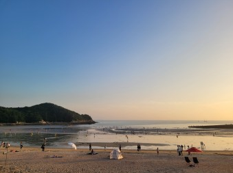

을왕리 해수욕장
늘목 또는 얼항으로도 불리며 1986년 국민관광지로 지정되었다. 백사장 길이는 약 700m, 평균 수심은 1.5m로 비교적 규모가 큰 편이다. 울창한 송림과 해수욕장 양쪽 옆으로 기암괴석이 늘어서 있어 경관이 매우 아름답다. 특히 낙조가 아름답기로 서해안에서 손꼽힌다.
위치 : 인천 중구 용유서로302번길 16-15
인천공항 하늘정원
하늘정원은 공사가 인천공항 동남측 유휴지(38만㎡)에 조성한 휴식공간으로 인천공항에 이착륙하는 항공기의 모습과 더불어 자연경관을 함께 즐길 수 있는 대표적인 공항명소이다.
위치 : 인천광역시 중구 운서동 2848-6